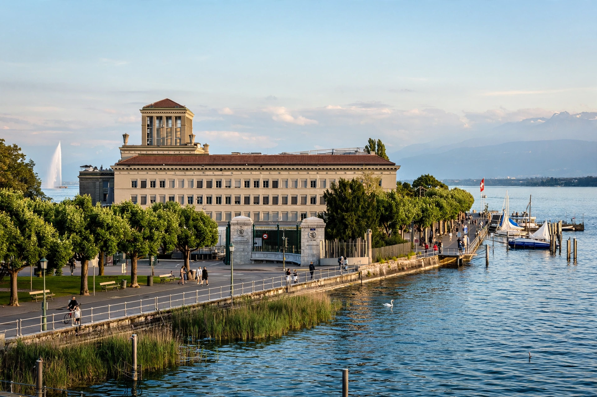

Dispute settlement (or dispute resolution) is the process by which legal or political disagreements are resolved, whether between private parties, between states, or between states and international organisations.
Dispute settlement methods range along a spectrum from informal to adjudicative: negotiation, mediation and conciliation involve a third party facilitating agreement without imposing an outcome; arbitration and litigation produce binding decisions by a tribunal or court. Article 33 of the UN Charter lists negotiation, enquiry, mediation, conciliation, arbitration, judicial settlement and resort to regional arrangements as means for the peaceful settlement of international disputes.
At the international level, disputes between states may be settled by the International Court of Justice in a contentious case, by specialised tribunals such as the International Tribunal for the Law of the Sea, or by WTO panels under the Dispute Settlement Understanding, which provides a rule-based system of panels and (formerly) an Appellate Body for trade disputes.
Investment treaties commonly allow foreign investors to bring claims against host states in investor-state arbitration, a system that has attracted criticism concerning transparency and regulatory chill, and has prompted reform efforts at UNCITRAL and elsewhere.